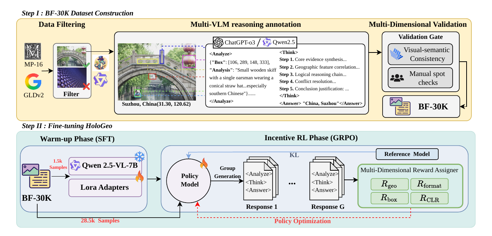
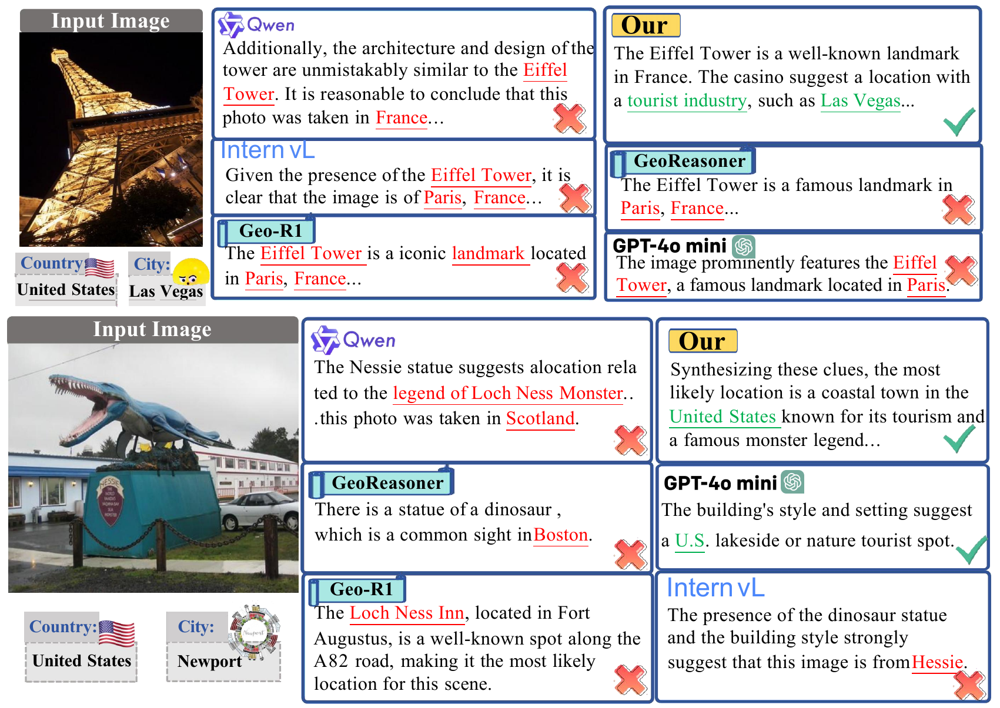
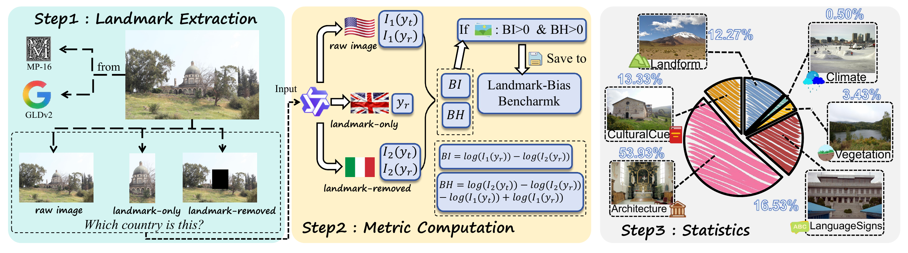
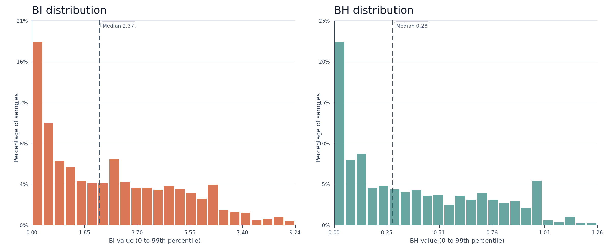
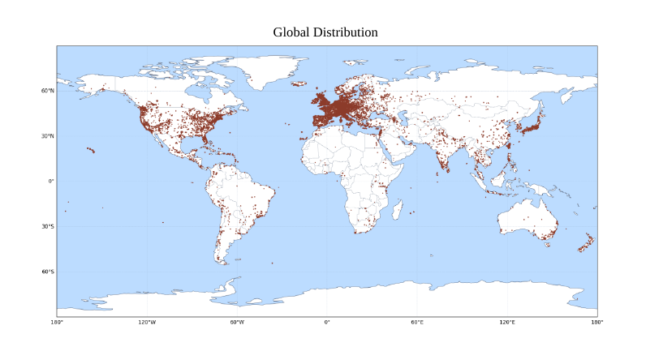
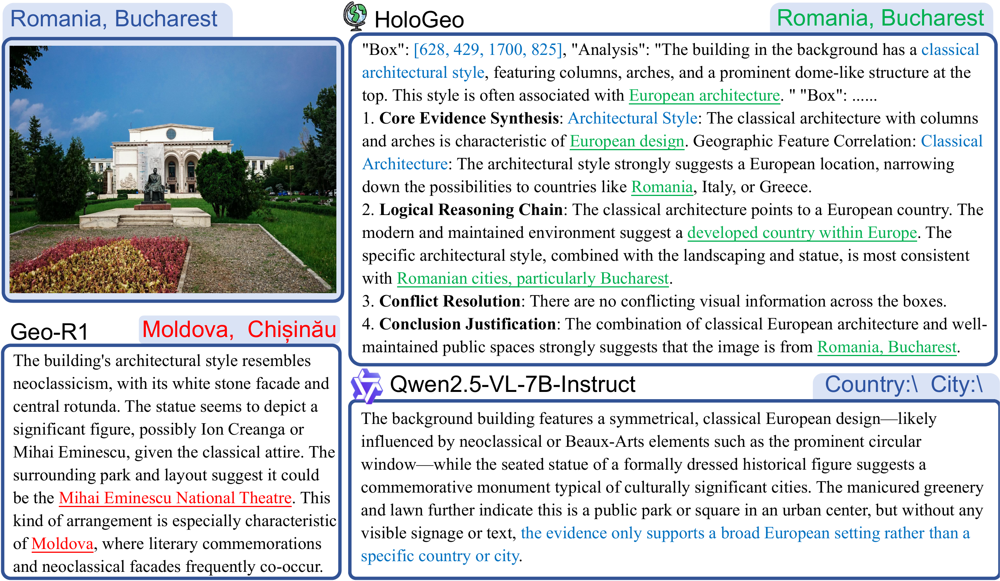

HoloGeo
Mitigating Landmark Bias in Geo-localization via Evidence-Driven Reasoning
ACM MM 2026
♠National University of Singapore, Singapore, Singapore
♦Shandong University of Science and Technology, Qingdao, China
★University of Oxford, Oxford, United Kingdom
Contact:
e1554357@u.nus.edu 202211081013@sdust.edu.cn shengqiongwu@gmail.com
(* Corresponding author)
News
- 🎉 2026/07 HoloGeo has been accepted to ACM MM 2026.
- 📦 2026/07 The paper, code, datasets, and model checkpoints are now publicly available.
- 🚀 2026/07 The HoloGeo project page is now live.
Quick Overview

HoloGeo constructs BF-30K with structured multi-evidence reasoning chains, then trains VLMs with geo-location accuracy, visual grounding, and comprehensive logical reasoning rewards.
Abstract
TL;DR
HoloGeo diagnoses landmark bias with BI/BH, builds LandmarkBias-3K and BF-30K, and trains geo-localization VLMs to reason from multiple visual evidence sources rather than landmark shortcuts.
Recent advances in Vision-Language Models have significantly improved image geo-localization, yet existing models remain susceptible to landmark bias, causing them to overlook geographical cues or form spurious correlations. To systematically investigate this issue, we design two quantitative metrics, Bias Intensity and Bias Harmfulness, and establish a comprehensive benchmark, LandmarkBias-3K.
To mitigate landmark bias, we propose HoloGeo, an evidence-driven reasoning framework supported by BF-30K, a high-quality dataset annotated with structured multi-evidence bias-free reasoning chains. With multi-dimensional rewards, HoloGeo encourages balanced attention over diverse visual cues and achieves reliable evidence-driven joint reasoning.

Insights
The key insight behind HoloGeo is that reliable geo-localization should not collapse onto a single visually salient landmark. Instead, models should reason over multiple evidence types, including architecture, surrounding environment, road signs, landforms, vegetation, and cultural context.
Bias Diagnosis
BI measures how strongly a landmark anchors the prediction, while BH measures whether that influence harms the ground-truth preference.
Bias Benchmark
LandmarkBias-3K contains 3,000 curated examples where landmark cues are insufficient, ambiguous, or deceptive.
Evidence Training
BF-30K provides structured multi-evidence reasoning chains for bias-free geo-localization supervision.
LandmarkBias-3K Construction

BI/BH Distribution

Global Coverage

Bias Metric Cases

Method
Geo-localization Evaluation
HoloGeo improves robustness on the challenging LandmarkBias-3K benchmark while preserving strong performance on standard geo-localization benchmarks.
| Model | IM2GPS | IM2GPS3K | YFCC4K |
|---|---|---|---|
| GeoReasoner | 24.9 / 48.1 / 65.8 | 26.5 / 40.4 / 57.7 | 6.3 / 10.4 / 17.3 |
| Geo-R1 | 42.2 / 59.5 / 77.2 | 35.4 / 52.3 / 69.7 | 17.0 / 29.0 / 48.9 |
| GeoChat | 38.8 / 59.1 / 76.8 | 34.7 / 51.7 / 69.4 | 17.0 / 29.2 / 49.8 |
| GLOBE | 44.3 / 59.4 / 76.3 | 40.2 / 56.2 / 71.5 | 18.0 / 30.7 / 50.6 |
| HoloGeo | 47.3 / 60.3 / 76.8 | 38.5 / 53.7 / 70.8 | 18.9 / 31.7 / 51.5 |
| Model | City | Region | Country |
|---|---|---|---|
| GPT-4o-mini | 19.47 | 35.77 | 59.00 |
| Qwen2.5-VL-7B | 16.83 | 28.67 | 44.57 |
| GeoReasoner | 10.67 | 22.77 | 47.13 |
| GLOBE | 23.27 | 44.27 | 63.90 |
| GeoAgent | 23.57 | 45.27 | 67.07 |
| HoloGeo-SFT+RL | 27.27 | 47.07 | 68.20 |
| Model | SFT | Rgeo | Rbox | RCLR | City | Region |
|---|---|---|---|---|---|---|
| Qwen2.5-VL-7B | - | - | - | - | 35.02 | 46.83 |
| Qwen2.5-VL-7B + SFT | ✓ | - | - | - | 40.93 | 56.54 |
| HoloGeo Full | ✓ | ✓ | ✓ | ✓ | 47.26 | 60.34 |
| w/o Rgeo | ✓ | - | ✓ | ✓ | 41.35 | 59.49 |
| w/o Rbox | ✓ | ✓ | - | ✓ | 43.03 | 59.07 |
| w/o RCLR | ✓ | ✓ | ✓ | - | 45.99 | 59.49 |
| Type | Qwen City | HoloGeo City | Qwen Region | HoloGeo Region | Qwen Country | HoloGeo Country |
|---|---|---|---|---|---|---|
| Landform | 8.42 | 18.48 | 30.16 | 50.82 | 41.30 | 68.48 |
| Cultural Cues | 5.25 | 12.50 | 10.25 | 22.75 | 23.00 | 44.75 |
| Climate | 13.33 | 13.33 | 20.00 | 26.67 | 33.33 | 46.67 |
| Architecture | 22.06 | 31.46 | 35.54 | 51.79 | 54.70 | 73.73 |
| Vegetation | 6.80 | 14.56 | 12.62 | 36.89 | 24.27 | 69.90 |
| Language Signs | 17.54 | 24.60 | 23.59 | 40.73 | 35.89 | 58.67 |
Why Landmark Bias Occurs

LandmarkBias vs. IM2GPS

Error Analysis

Case Study

Examples
{kind=link}
{kind=link}
{kind=link}
{kind=link}
BibTeX
Accepted at ACM Multimedia 2026. Citation details will be updated after publication.
@inproceedings{zhou2026hologeo,
title = {HoloGeo: Mitigating Landmark Bias in Geo-localization via Evidence-Driven Reasoning},
author = {Zhou, Pengcheng and Liu, Xuanyu and Yin, Yanchen and Li, Bobo and Wu, Shengqiong and Lee, Mong-Li and Hsu, Wynne},
booktitle = {Proceedings of the 34th ACM International Conference on Multimedia},
year = {2026}
}